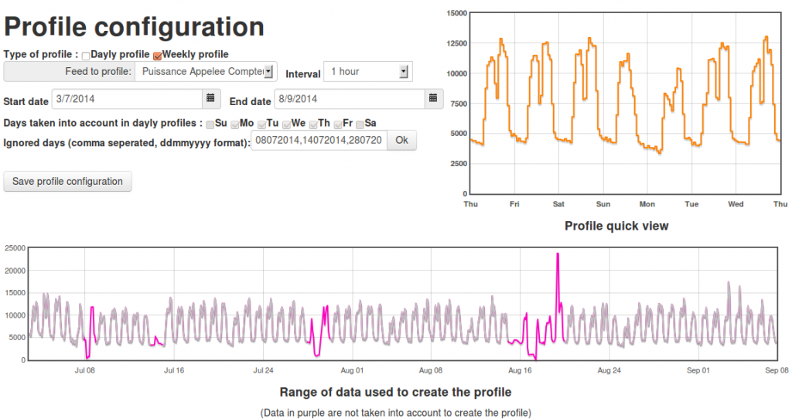

Hi,
Attached is an Emoncms module that I'm developing to get the typical profile of my feeds.
I'm using this module to analyze and characterize my data.
It also helps me to detect erratic data in my feeds.
This modules can draw daily or weekly profiles on a specific period defined by a start date and an end date. A profile is a set of average value that are calculated for every time step (5min/10min/20min/30min/1h/2h/4h)
In daily profiles, you can take into account only some days (monday to friday by example)
In all profiles, you can exclude some days (by example non-working day, or days with erratic data collection)

On the bottom of the page, one can visualize on a different period :
- the feed abd the average feed on the time step
- the profile +/- the standard deviation
- the gap between the profile and the average
4 profiles, can be configured and saved.
Only PHPFIWA feeds are supported as of now.
This module is fully based on the dynamic module that I modified (thanks Trystan). If needed, I will put it on github.
Installation :
1. unzip the attached archive into the driectory xxx/emoncms/Modules
2. Log in your emoncms server as admin.
3. Go in the admin section (top right corner)
4. Click on the "Update and check" button.
Futur dev :
- Clean some dirty part of the code ... and also translate my Frenglish to English
- Add support for all engines
- Periodic post of the profile value that corresponds to the current time. In that way, it would be possible to make a comparison between the current value of a feed and its associated profile, and eventually raise an alert. (it may require a new process).
Eric
Re: Profile module
This looks really impressive Eric, I look forward to giving it a try.
Paul
Re: Profile module
Thanks Paul, but is a very simple application that just makes averages.
When configuring the profile, do not use a short timestep on a large period, otherwise it may lag...
Eric
Re: Profile module
This looks really good, thanks for sharing it Eric! Interested to hear more about how you use it.
Trystan
Re: Profile module
Hello,
I use this module to get the profile of the energy usage in buildings. It simply makes averages in order to highlight the repetitive usage of energy in a week or a day. This methods smooths the extraordinary events. The standard deviation helps you to measure how it is repetitive.
It may help you to understand what's happening in a monitored building. It is particularly useful in commercial buildings, office buildings, education buildings, and industrial buildings. In fact, those buildings are occupied and maintained by many people. Nobody knows exactly how the energy is really used (when, why and for what ?).
I'm currently testing this module with a organic supermarket that I'm monitoring. Thank's to the dally profile, I realized some things (I feel like big brother but the expected gains are high ;)
1. The energy consumption of the cold room is abnormally high at certain times of the week. It corresponds to the delivery from the wholesaler because the doors stay open for a long period of time. The delivery will be organized in an efficient way to save energy.
2. Some energy consumption (lighting in particular) are higher some days of the week. It seems related with the behavior of the employees working those days.
Some corrective actions will be planned. Then we will be able to compare the profiles before and after that.
This is an example of what is possible to do now with this module. I have two other related ideas in development that are not implemented yet :
1. Be able to compare the current energy usage to a reference profile. It will allow live detection of abnormal events (someone forgot to turn off the heat when leaving, a machine stopped in the factory, ...). The reference profile may be built from what's happening in the past during normal usage. It can also be a target profile designed to save more energy than usual.
2. Be able to create the profile of a group of feeds in order to compare one feed to the profile of its group. As an example, I would like to get the profile of a residential building of 10 dwellings. (Each dwelling is monitored separately). Then each occupant would be able to compare their personal profile with the profile of the entire building. It may help to understand what's is going good/bad.
Eric
Re: Profile module
Hello Eric,
I´m trying to include a new timestep: 15 min, but I can´t. It is rounded to 20 min. 6 min timestep works, also 7, 8 or 9, but 11, 12, 13, 14 are rounded to 10; 15, 16, 17, 18, 19 goes to 20...
How can i get this?
Thank you in advance.
Re: Profile module
Hello,
The possible interval (5 min, 10 min, 20 min, 30 min , 1h, 2h, 4h) in this module correspond to the possible interval offer by the feed model. So I don't think you can get value for 15min without doing a trick in the code.
Happy to see that someone is using that module.
Eric
Re: Profile module
@denergic, I just realised the 15 minute interval is implemented in emoncms v9, but not on emoncms.org, I've added it to emoncms.org, as it is indeed, a useful interval.
Re: Profile module
Thanks Trystan, but I have a modified Emoncms. What files do I need to change to get that timestep?
[Please read and heed this. 4 copies have been deleted. (Moderator - RW)]